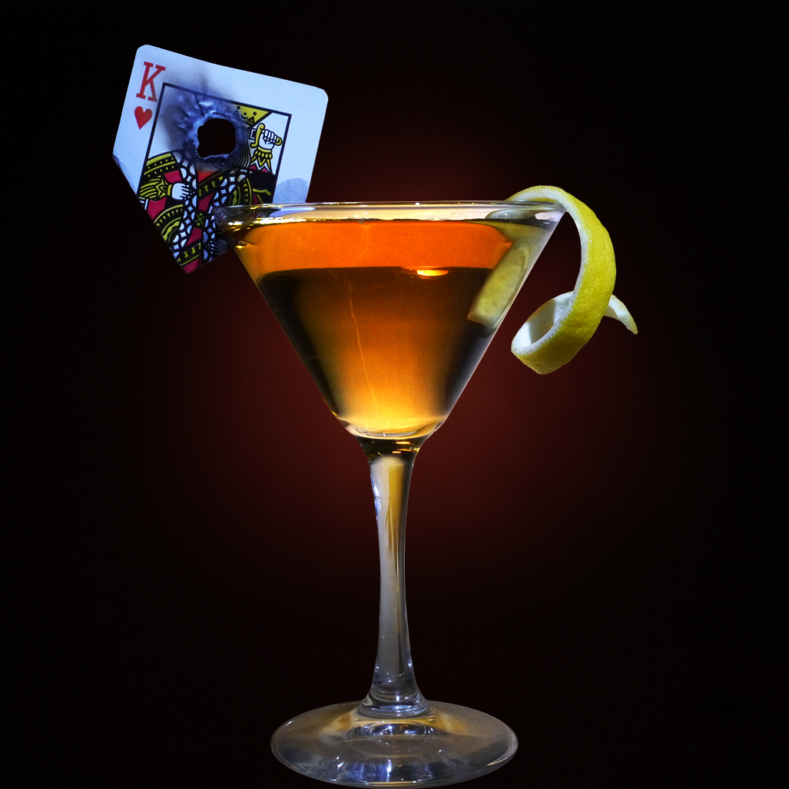

The Sierra Madre Martini: A cocktail inspired by Fallout New Vegas

Description
The Sierra Madre martini is a consummable item from the eponymous DLC
within Fallout New Vegas, a game that holds a special place in my heart.
This DLC is notoriously difficult, giving its players a very fun experience,
albiet the type of fun you never want to have again. This recipe is in honor
of this DLC.
Ingredients
- 2.50oz of tequila reposado
- .50oz of sweet red vermouth
- 2 dashed of chocolate bitters
Instructions
- Add all of the ingredients to a mixer.
- Then, add an appropriate amount of ice.
- Stir all the ingredients and strain into a martini glass.